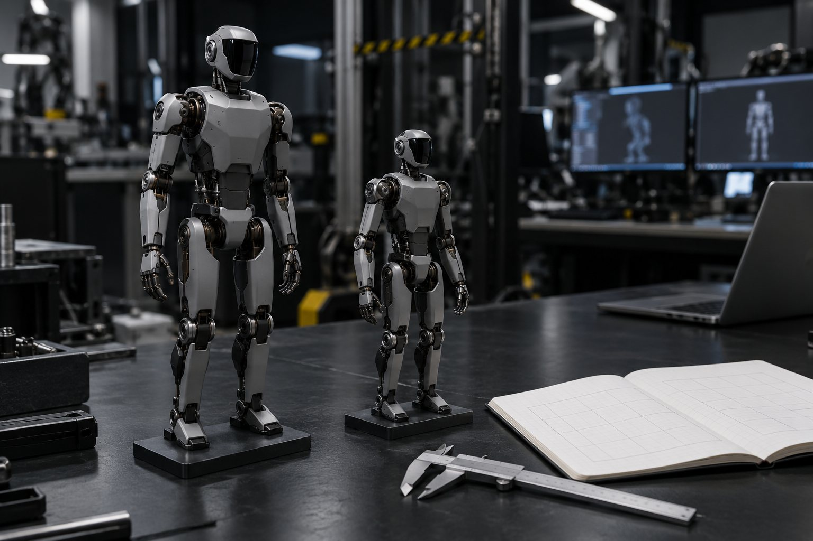

E1 · G1 × H1
3 minRode o bloco de comparação e explique em uma frase por que o H1 tem CoM mais alto.
Pronto quando: python3 kit/comparar.py unitree_g1/scene.xml unitree_h1/scene.xml; echo "saída: $?" → FICHA: 7 itens comparados e saída: 0.
Aula 8 · 15 min
Ficha de fabricante, arquivo de simulação e medida não dizem a mesma coisa, e é na diferença que mora o sim-to-real. Nesta aula você compara dois humanoides do Menagerie por script, monta uma ficha que separa as três fontes e sai com o plano de estudo da formação.
Começar a aula
Objetivo: comparar dois humanoides do Menagerie por script e montar a sua ficha técnica separando fabricante, arquivo e medida.
Cada linha da ficha diz de onde veio. Clique em cada bloco.
A coluna "diferença" é a lista de tarefas do sim-to-real.
Com preço só quando há fonte, e sempre variando por versão e revenda. Clique em cada um.
É a plataforma que aparece em quase tudo: Menagerie (29 graus de liberdade), unitree_rl_lab, mjlab, retargeting (GMR), SONIC com pesos abertos e LeRobot.
O base (US$ 13,5 mil) não tem SDK; o EDU, que tem, é sob consulta.
1,23 m, 27–29 kg, de 20 a 40 graus de liberdade conforme a versão; US$ 4.900 a 5.900 na loja oficial (EDU sob consulta).
Menos gente publica controlador para ele do que para o G1: menos código pronto.
95 cm, 19,5 kg, 22 graus de liberdade, 117 TOPS, 1 h 10 min andando a 1,1 m/s (ficha oficial). No programa da RoboCup 2026, US$ 14.999 o preço público.
O T1, da mesma empresa, tem modelo no Menagerie (booster_t1, 23 atuadores).
Berkeley Humanoid Lite: impresso em 3D, menos de US$ 5 mil em peças (relatado), com treino em Isaac Lab e validação sim2sim no repositório. ToddlerBot: 30 graus de liberdade, Jetson Orin NX, lista de peças pública.
Ambos pedem bancada e tempo de montagem; o modelo de simulação vem junto.
O comparar.py imprime 7 itens dos dois arquivos. O modelo de ficha tem as três colunas; os colchetes são o que você preenche.
F=${FTH:-$HOME/fth}; cd $F/anatomia && . $F/.venv/bin/activate
python3 kit/comparar.py unitree_g1/scene.xml unitree_h1/scene.xml; echo "saída: $?"# Ficha técnica — [robô] (versão [base/EDU/…]) Data: [DD/MM/AAAA] · Modelo de simulação: [pasta do Menagerie] @ [commit] | item | fabricante (fonte, data) | arquivo MJCF | medido no curso | diferença | |---|---|---|---|---| | graus de liberdade | [n] ([URL], [data]) | nu = [n] | — | [versão diferente?] | | massa (kg) | [n] | [n] | — | [%] | | altura do CoM em pé (m) | — | [n] | — | — | | maior torque (N·m) | [n ou "não publicado"] | [n] ([junta]) | agachado 90°: [n] | [%] | | sensores | [lista da ficha] | [n] no arquivo | + [acrescentados] | [o que falta] | | bateria | [mAh, S, h] | — | [Wh, conta derivada] | — | | computação | [CPU / Orin / Thor] | — | — | — | | equilíbrio sem controlador | — | — | fica com [n] N · cai com [n] N (0,2 s) | — | | estágio | [demo/piloto/produção] ([URL], [data]) | — | — | — |
item unitree_g1 unitree_h1 GDL acionados (nu) 29 19 massa do modelo (kg) 33.3 51.4 altura do CoM (m) 0.69 0.95 maior torque (N·m) 139 300 junta do maior torque right_knee_joint right_knee sensores no arquivo 4 0 pose inicial stand home FICHA: 7 itens comparados saída: 0
O H1 é mais pesado e mais alto (CoM a 0,95 m) e tem joelho de 300 N·m no modelo, mas menos graus de liberdade e nenhum sensor declarado no arquivo.
ERRO: não achei apptronik_apollo/scene.xml (nem em ~/fth/mujoco_menagerie). Rode a preparação da aula 2. saída: 1
A bancada baixou só 4 humanoides. Para comparar outro, acrescente a pasta: git -C ~/fth/mujoco_menagerie sparse-checkout add apptronik_apollo, e rode de novo.
Quatro entregas principais. Clique num degrau para ver o "pronto quando".
A tabela que separa demo, piloto e produção. Atualize a cada notícia: a data é o que mantém a tabela honesta.
A bancada que os cursos 1 a 4 reaproveitam: venv, MuJoCo 3.16.0 e Menagerie no commit testado.
Árvore de juntas, torque medido no agachamento e sensores conferidos contra o peso: o corpo descrito por números seus.
O limite do corpo sem controlador, a conta de energia e a ficha técnica: o ponto de partida do curso de locomoção.
Quatro entregas em sequência. A bancada da aula 2 é pré-requisito de todas as práticas dos próximos cursos da FTH.
A ordem importa: sem a bancada, nada das aulas 3 a 8 roda.
Escolha a data de início e quanto tempo você tem por semana. O plano lista as práticas de cada aula.
Comparar, preencher e decidir.
Rode o bloco de comparação e explique em uma frase por que o H1 tem CoM mais alto.
Pronto quando: python3 kit/comparar.py unitree_g1/scene.xml unitree_h1/scene.xml; echo "saída: $?" → FICHA: 7 itens comparados e saída: 0.
Copie kit/ficha-modelo.md para ~/fth/ficha-g1.md e preencha as três colunas com o que você leu e mediu nas aulas 1 a 7.
Pronto quando: grep -c "\[" ~/fth/ficha-g1.md → 0 (nenhum colchete por preencher).
Acrescente outra pasta ao sparse-checkout (por exemplo apptronik_apollo) e compare com o G1. Atenção: o PAL TALOS não tem scene.xml; use pal_talos/scene_position.xml.
Pronto quando: python3 kit/comparar.py unitree_g1/scene.xml [pasta]/scene.xml | tail -1 → FICHA: 7 itens comparados.
A explicação aparece depois da sua resposta.
Pergunta 1 de 3
Para que serve a coluna "diferença" da ficha?competência
Pergunta 2 de 3
Um laboratório quer o humanoide com mais código aberto pronto para RL e retargeting. O que a pesquisa da formação aponta?
Pergunta 3 de 3
O comparar.py diz 139 N·m de torque máximo no G1. Como pôr isso na ficha?
Escolha uma alternativa. A explicação aparece depois da sua tentativa.